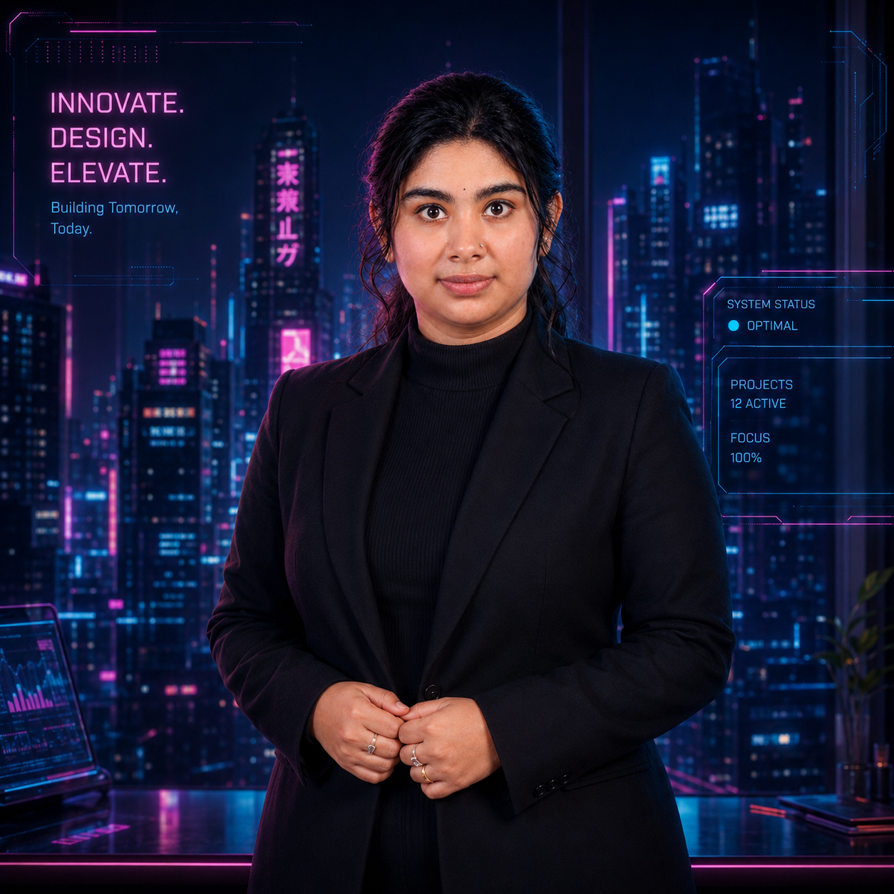

Technical Content Writer | SEO Content Writer | Content Editor
Ernakulam, Kerala, India | +91 7591920719 | gayathria306@gmail.com
A literature postgraduate from Amrita Vishwa Vidyapeetham with a strong foundation in storytelling, critical analysis, and clear communication. I specialize in transforming complex technical concepts into engaging, accessible content for business and technology audiences.
Experienced in SEO-optimized content, technical writing, and content editing — particularly in Fintech, Cybersecurity, and Digital Banking domains.
Jan 2025 – Mar 2026
Feb 2022 – Aug 2022
| Project | Type | Link |
|---|---|---|
| Industry Blog Writing | Fintech & Cybersecurity | View |
| Academic Research Paper | Published Paper | View PDF |
| Eclipsed Realm | Web Fiction | Wattpad |
| Ethereal Rhymes | Poetry Portfolio | WordPress |
Master of Arts in English Language and Literature (CGPA 8.34)
Amrita Vishwa Vidyapeetham, Kochi (2023 – 2025)
Bachelor of Arts in English Language and Literature (CGPA 7.23)
Amrita Vishwa Vidyapeetham, Kochi (2017 – 2020)